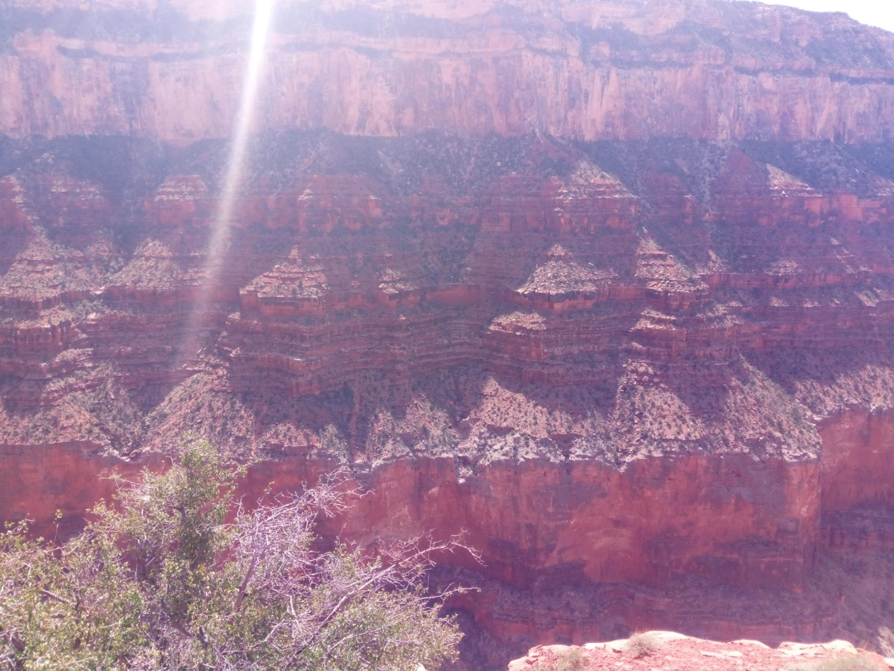
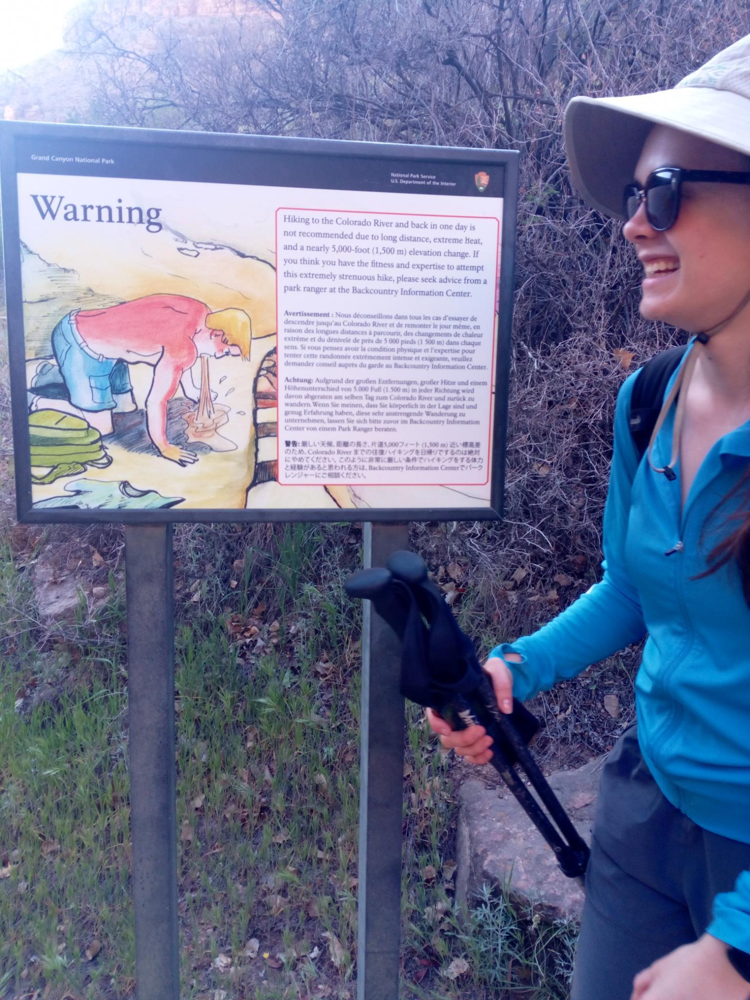
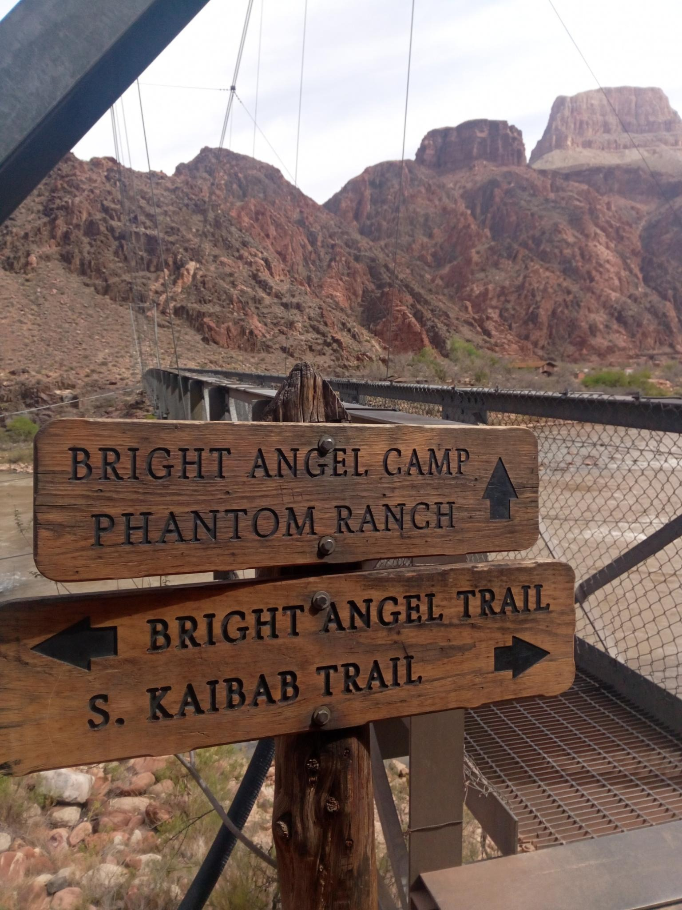
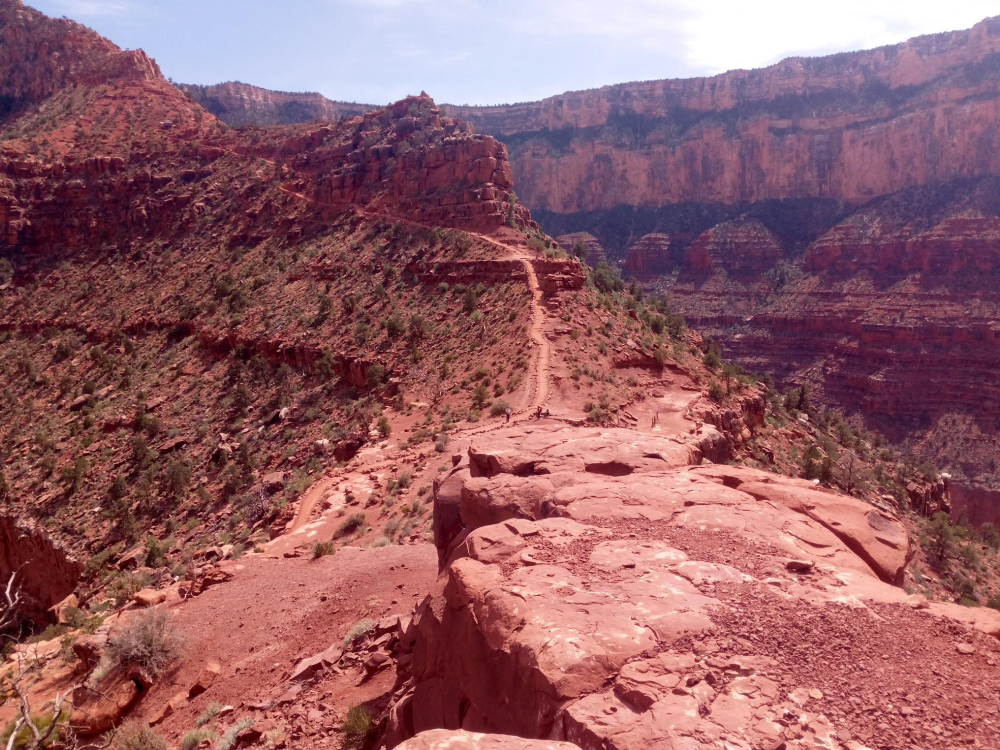
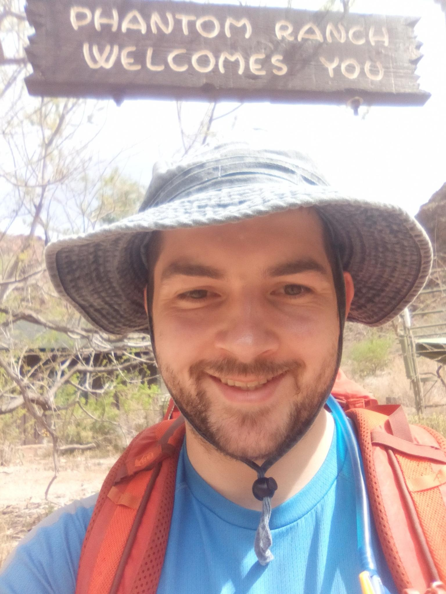
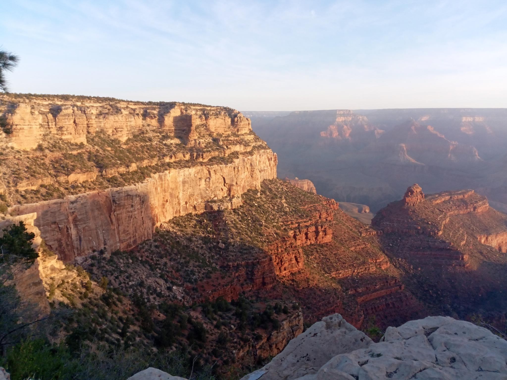

Ariana, me, Eric, and Jesse (Eric's sister) went to the grand canyon recently! Ariana & I went down the Bright Angel trail and back up the South Kaibab trail. I went on a brief detour to Phantom Ranch to see where Mom and Dad camped previously, although I was unable to find the mule selling beer. Eric and Jesse went halfway down the South Kaibab to meet us in the afternoon at skeleton point. This was a great time of year because there was no snow at the top and temperatures at the bottom were reasonable!
We started at 4:40am (45F) in the dark (we brought headlamps), refilled water at Indian Garden at about mile 6, and reached the Colorado river at about 9:30am (87F). After that we went sideways along the river and upward on the South Kaibab trail. Ariana started to get sore calves with about 2 miles left, and I started to get hungry, but we finished the hike in good spirits at about 3:40pm.
We each carried about 4-6 liters of water, and consumed 5-7 liters. Even in the spring this hike requires a lot of water! We ate about 2 grams of salt and 1,600-2,000 calories on the trail but probably should have brought additional snacks next time. The backcountry information center provided lots of helpful safety information.





